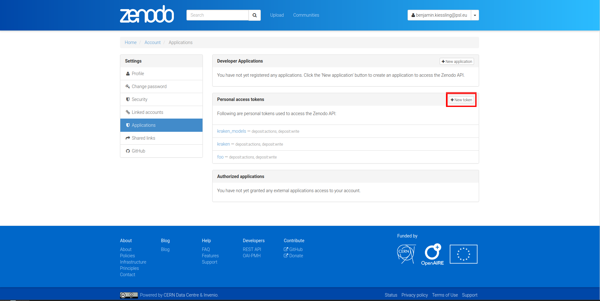

Model Repository¶
There is a semi-curated repository of freely licensed recognition models that can be interacted with from the command line using a few subcommands. With the 5.x releases of kraken the repository has been upgraded to follow the HTRMoPo schema which adds model card support and allows publishing of arbitrary models. Previous versions only permitted rudimentary metadata for text recognition models. While kraken is downwards compatible with the earlier v0 schema, the information provided by these records is obviously much more limited.
Querying and model retrieval¶
The list subcommand retrieves a list of all models available and prints
them including the most important metadata fields:
$ kraken list
┏━━━━━━━━━━━━━━━━━━━━━━━━━━━━━┳━━━━━━━━━━━━━━━━━━━━━━━━━━━━━━━━┳━━━━━━━━━━━━━━┳━━━━━━━━━━━━━━━━━━━━━━━━━━━━━━━━┓
┃ DOI ┃ summary ┃ model type ┃ keywords ┃
┡━━━━━━━━━━━━━━━━━━━━━━━━━━━━━╇━━━━━━━━━━━━━━━━━━━━━━━━━━━━━━━━╇━━━━━━━━━━━━━━╇━━━━━━━━━━━━━━━━━━━━━━━━━━━━━━━━┩
│ 10.5281/zenodo.7051645 │ │ │ │
│ ├── 10.5281/zenodo.14585602 │ Printed Urdu Base Model │ recognition │ automatic-text-recognition │
│ ├── 10.5281/zenodo.14574660 │ Printed Urdu Base Model │ recognition │ kraken_pytorch │
│ └── 10.5281/zenodo.7051646 │ Printed Urdu Base Model │ recognition │ kraken_pytorch │
│ │ │ │ │
│ │ │ │ │
│ │ │ │ │
│ 10.5281/zenodo.10066218 │ │ │ │
│ ├── 10.5281/zenodo.12743230 │ CATMuS Medieval 1.5.0 │ recognition │ kraken_pytorch; handwritten │
│ └── 10.5281/zenodo.10066219 │ CATMuS Medieval │ recognition │ text recognition; htr; middle │
│ │ │ │ ages │
│ │ │ │ kraken_pytorch; handwritten │
│ │ │ │ text recognition; htr; middle │
│ │ │ │ ages │
│ 10.5281/zenodo.13788176 │ │ │ │
│ └── 10.5281/zenodo.13788177 │ McCATMuS - Transcription model │ recognition │ kraken_pytorch; HTR; OCR; │
│ │ for handwritten, printed and │ │ generic model │
│ │ typewritten documents from the │ │ │
│ │ 16th century to the 21st │ │ │
│ │ century │ │ │
│ 10.5281/zenodo.14602568 │ │ │ │
│ └── 10.5281/zenodo.14602569 │ General segmentation model for │ segmentation │ multiscriptal │
│ │ print and handwriting │ │ │
│ 10.5281/zenodo.5468572 │ │ │ │
│ └── 10.5281/zenodo.5468573 │ Medieval Hebrew manuscripts in │ recognition │ kraken_pytorch
...
Models in the repository are identified by a unique, persistent identifier called a DOI. Since the repository supports versioning, each model has two DOIs: a concept DOI, which represents the model as a whole and always points to the latest version, and a version DOI, which refers to a specific version of the model. In the DOI column, this relationship is shown as a tree: the root is the concept DOI, and each branch beneath it represents a different version, starting with the most recent.
Per default the whole content of the repository is printed which can be confusing when looking for a particular model. The output of list can be filtered by model type, language, script, and keywords:
$ kraken show --recognition # Only lists recognition models
$ kraken show --segmentation # Only lists segmentation models
$ kraken show --language eng # Only lists models (recognition or segmentation) claiming support for English language input
$ kraken show --script Arab # Only lists models (recognition or segmentation) claiming support for Arabic script input
$ kraken show --keyword "middle ages" # Only lists models (recognition or segmentation) containing the "middle ages" keyword
Defining multiple filters of different type will AND them:
$ kraken show --recognition --script Cyrl --language srp
will match recognition models for Serbian in Cyrillic script.
Defining multiple filters of the same type will OR them:
$ kraken show --recognition --language ota --language fas
will match recognition models for either Ottoman Turkish or Persian.
Identifiers for scripts use ISO 15924 four letter codes, languages are identified by ISO 693-3 codes.
The full metadata record of a particular model can be accessed using the show command:
$ kraken show 10.5281/zenodo.14585602
Printed Urdu Base Model Trained on the OpenITI Corpus
┌──────────────────┬───────────────────────────────────────────────────────────────────────────────────────────┐
│ DOI │ 10.5281/zenodo.14585602 │
│ concept DOI │ 10.5281/zenodo.7051645 │
│ publication date │ 2025-01-01T20:18:17+00:00 │
│ model type │ recognition │
│ language │ Urdu │
│ script │ Arabic │
│ keywords │ automatic-text-recognition │
│ datasets │ https://github.com/OpenITI/arabic_print_data.git │
│ metrics │ cer: 4.13 │
│ base model │ https://doi.org/10.5281/zenodo.7050296 │
│ software │ kraken │
│ software_hints │ segmentation=baseline │
│ │ version>=2.0 │
│ license │ Apache-2.0 │
│ creators │ Benjamin Kiessling (École Pratique des Hautes Études, PSL University) │
│ description │ ┏━━━━━━━━━━━━━━━━━━━━━━━━━━━━━━━━━━━━━━━━━━━━━━━━━━━━━━━━━━━━━━━━━━━━━━━━━━━━━━━━━━━━━━━┓ │
│ │ ┃ Printed Urdu Base Model Trained on the OpenITI Corpus ┃ │
│ │ ┗━━━━━━━━━━━━━━━━━━━━━━━━━━━━━━━━━━━━━━━━━━━━━━━━━━━━━━━━━━━━━━━━━━━━━━━━━━━━━━━━━━━━━━━┛ │
│ │ │
│ │ This is a text recognition model trained on the OpenITI dataset of printed Arabic-script │
│ │ text available here in its state of 2022-09-03. It encompasses Urdu (~11k lines) material │
│ │ in a variety of typefaces. The model has been obtained by fine-tuning the Arabic-script │
│ │ base model on the purely Urdu subset of the corpus. │
│ │ │
│ │ The ground truth was lightly normalized to NFD but is otherwise untouched. │
│ │ │
│ │ │
│ │ Architecture │
│ │ │
│ │ The default model architecture and hyperparameters of kraken 4.x where used. │
│ │ │
│ │ │
│ │ Uses │
│ │ │
│ │ The model is trained on a variety of highly diverse typefaces it is mostly intended as a │
│ │ base model for fine-tuning more specific models from it. In line with this it has not │
│ │ been extensively verified or optimized. │
│ │ │
│ │ │
│ │ How to Get Started with the Model │
│ │ │
│ │ Follow the instructions on installing and using kraken from the website. │
│ │ │
│ │ Metrics │
│ │ │
│ │ CER: 4.13% │
└──────────────────┴───────────────────────────────────────────────────────────────────────────────────────────┘
The contents of the metadata record can vary between individual records as many are in the legacy v0 schema format and do not contain information such as model provenance, software compatiblity hints, etc.
If a suitable model has been decided upon it can be retrieved using the get
subcommand:
$ kraken get 10.5281/zenodo.14585602
Processing ━━━━━━━━━━━━━━━━━━━━━━━━━━━━━━━━━━━━━━━━ 0% 0/0 bytes -:--:-- 0:00:00
Model dir: /home/mittagessen/.local/share/htrmopo/bf1b4396-5b29-5c57-a1d3-f2c6c9ef2b90 (model files: urdu_best.mlmodel)
Models will be placed in the indicated location and can be accessed using their name as
printed in the last line of the kraken get output.
$ kraken -i ... ... ocr -m urdu_best.mlmodel
Publishing¶
Models can be shared on the repository by anyone with a Zenodo account. The process consists of 2 stages: the creation of the deposit on the Zenodo platform followed by approval of the model in the community making it discoverable for other kraken users.
For uploading models a personal access token is required. After account creation tokens can be created under the account settings:
To upload a model file you will also need a metadata file consisting of a YAML header with the machine readable part of the record and a model card body in Markdown format:
---
authors:
- affiliation: "\xC9cole Pratique des Hautes \xC9tudes, PSL University"
name: Benjamin Kiessling
base_model:
- https://doi.org/10.5281/zenodo.7050296
datasets:
- https://github.com/OpenITI/arabic_print_data.git
id: 10.5281/zenodo.14585602
language:
- urd
license: Apache-2.0
metrics:
cer: 4.13
model_type:
- recognition
script:
- Arab
software_hints:
- segmentation=baseline
- version>=2.0
software_name: kraken
summary: Printed Urdu Base Model Trained on the OpenITI Corpus
tags:
- automatic-text-recognition
---
# Printed Urdu Base Model Trained on the OpenITI Corpus
This is a text recognition model trained on the OpenITI dataset of printed
Arabic-script text available [here](https://github.com/OpenITI/arabic_print_data.git) in its state of 2022-09-03. It encompasses
Urdu (~11k lines) material in a variety of typefaces. The model has been
obtained by fine-tuning the [Arabic-script base model](https://doi.org/10.5281/zenodo.7050296) on the purely Urdu
subset of the corpus.
The ground truth was lightly normalized to NFD but is otherwise untouched.
## Architecture
The default model architecture and hyperparameters of kraken 4.x where used.
## Uses
The model is trained on a variety of highly diverse typefaces it is mostly
intended as a base model for fine-tuning more specific models from it. In line
with this it has not been extensively verified or optimized.
## How to Get Started with the Model
Follow the instructions on installing and using kraken from the
[website](https://kraken.re).
#### Metrics
CER: 4.13%
It is not necessary to fill in the ID field of the metadata header as kraken will automatically request a new DOI and add it by itself. A new record can then be created like this:
$ ketos publish -a $ACCESS_TOKEN -i metadata.yaml aaebv2-2.mlmodel
DOI: 10.5281/zenodo.5617783
Kraken will verify that the metadata conforms to the schema and afterwards deposit the model at Zenodo. This deposit is persistent, i.e. can’t be changed or deleted later so it is important to make sure that all the information is correct. Nevertheless, a new version of an existing record can be created, for example to update metadata or when a model has been retrained and achieves better results on the target domain:
$ ketos publish -a $ACCESS_TOKEN -i metadata.yaml aaebv2-2.mlmodel -d 10.5281/zenodo.5617783
DOI: 10.5281/zenodo.5617784
Once a deposit has been created a request (requiring manual approval) for inclusion in the repository will automatically be created which will make it discoverable by other users.
It is possible to deposit models without including them in the queryable repository. Models uploaded this way are not truly private and can still be found through the standard Zenodo search and be downloaded with kraken get and its DOI. It is mostly suggested for preliminary models that might get updated later:
$ ketos publish --private -i metadata.yaml -a $ACCESS_TOKEN aaebv2-2.mlmodel
DOI: 10.5281/zenodo.5617734

{kind=link}